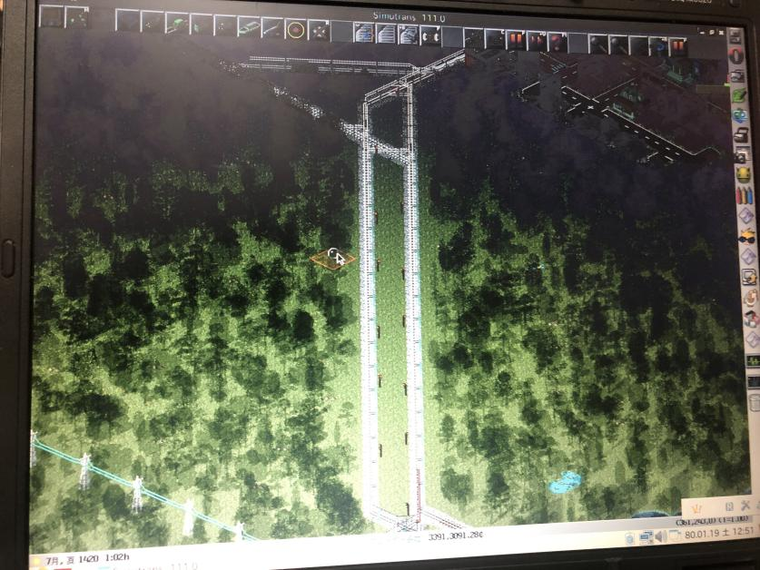

学校に重い方のパソコンを持っていくとどうなるのか
こんにちは。零阪です。非常に暑い日が続いておりますが、そろそろ飽きてきたので涼しくなってほしいですね。
さて、今日久々に登校した訳なんですが、ちょっといつもとは違うことをしてみました。
それが、ノートパソコンの持参です。実は、私は学校にパソコンを持っていくことが全くありませんでした。というのも、全然学校でパソコンを使うことがなかったからです。
普段学校でやるICTが関わる作業はすべて携帯で済ませ、パソコンを使うのは自宅や外出先での作業（Twitter含む）のみにするというレギュレーションを設けていたからです。
このレギュレーションが出来たのは、
- そもそも日常的に学校でやるICT作業は簡素なもので済む（文書の編集や、文書の編集、さらには映像の閲覧や文書の編集。）
- パソコンが要る作業は基本的に学校備え付けのパソコンで行う
- パソコンを理解する者が少なく、ましてや自分で知識の限り好き勝手にいじれるパソコンに慣れている人間は僅少である
あと、運動量とその後の満足度の効率を高めたかったというのもあります。つまり、せっかく重くて運動量が少しでも増えるなら使えるものの運搬に運動量を割いたほうがいい、というわけです。
さて、まずレギュレーション制定理由に対する結論から述べてしまいましょう。
- 今日は部活だったのでイレギュラーにつき結論出ず。
- これはその通りだった。が、特記事項があるため後述。
- 部活には想定よりも多くのパソコン人口がおり、特に不自然とも思われなかった。
で、特記事項にした「パソコンが要る作業」なんですが、実はこれは作業というより休憩中のある意味暇つぶしです。それがこれ。

ええ。Simutransですよ。パソコン持ってってシムトラしたんです。なぜかって？やりたいんだよ。
もはや茶番です。こんなの茶番です。前半に立派そうに言ったやつはなんだったのか。
はい。すみません。実は、当初はこの3つのことに着目した記事を書こうと思っていたのですが、昼に開けてから「そういえば全然シチュエーション違うな」ってことに気づきました。
ということでこの3つのことは全然深堀りできないままです。それでは有意義は愚か無意義もいいところなので感じたこととかを書き出していきます。
まず、今回持っていったパソコンは、「hp compaq nx6320」。もともとは某所にHDDを抜かれて打ち捨てられていたものを某所の主に許可を取り持ち帰った物です。
自宅には同じく打ち捨てられていた初代PC「SONY VAIO VGC-LB63B」がありまして、そこからDVD/CDドライブと2.5HDDを拝借。ついでに電子工作に役立ちそうな物も拝借。
そして、compaqからCDドライブを取り出し、跡地にDVD/CDドライブを取り付け、そして2.5HDDを装着し、充電用のACアダプターを購入して充電して準備完了。
Linux beanを導入し、Simutransをインストールして、そして遊びまくり、旧NPJP事務所にも持っていき、今に至るというわけです。
さて、昔話はさておき今回の話です。このパソコンの特徴を簡単に申し上げると、重い、熱い、楽しい。の３つです。一番最後はさておき、前半２つについて解説しましょう。
このパソコン、結構重いです。シャットダウン直後に持つと、赤ん坊を抱きかかえた気持ちになれます。
そして、ノートパソコン全般に言えるのですが、排気口の辺りが熱いです。しかし、私特有のことなのですが、私が普段本務機として使っているMacBookAir2009と違い、熱風がガッツリ出てくるのでちょっと怖い。
MacBookAirはどっちかというと、「あれ、出てるのかなこれ...?」レベルの熱風しか出てこないので、それはそれで不安になるのですが...
お待たせしました。部員たちのリアクションです。
...特筆事項なし！いや本当に、先述の通り特筆事項がありません。せいぜいちょっとパソコンについて質問してきたくらいで怪しむ様子、ガッツリ興味を持つ様子もなし。
こういうリアクションが丁度いいんです。素晴らしい。ガッツリ興味を持たれても困るし、怪しまれても困る。これくらいがいい。
なので、今後は部活のモチベーションが上がらない日はこのパソコンを持っていって一つの楽しみにしながら部活をやってみようと思います。
今日の記事は久々に長くなりました。ざっと感じたことを書き出しまくって整理もしないまま記事にするとこうなります。しかし、それでいい。
ということで、本日もご読了いただきありがとうございます。よろしければ、当ホームページのブックマーク登録や相互リンク、Instagram、Reality、Twitterのフォローをよろしくお願いします。
Tweet
記事一覧に戻る
Consoles